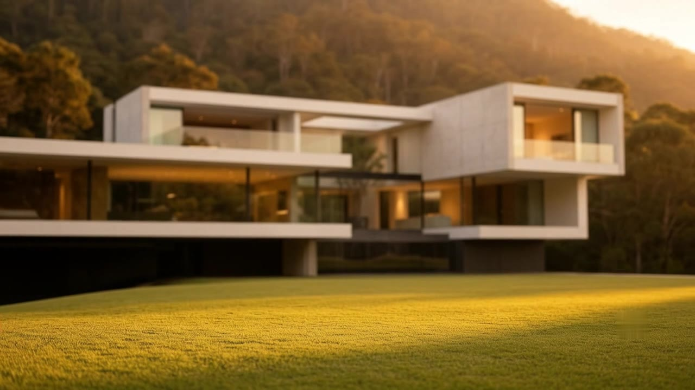
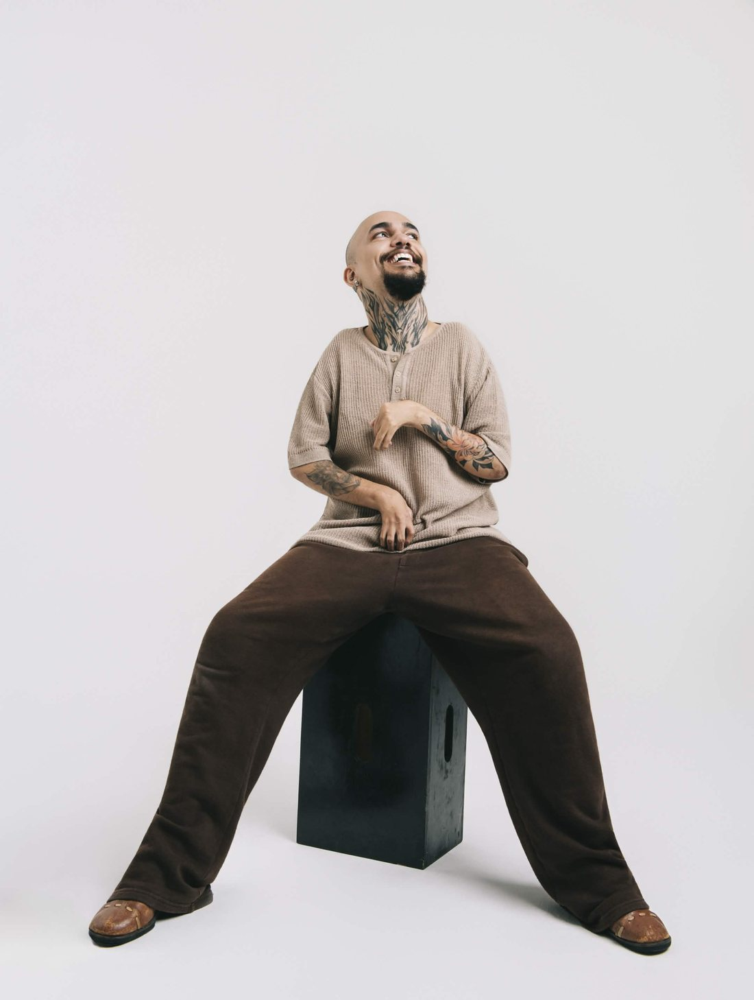

Presença digital para quem projeta, ergue e vende espaço.
O traço vira presença. Cada projeto tratado como obra — luz, proporção e silêncio, também na tela.
Precisão que se percebe. Estrutura, clareza e confiança técnica, sem ruído.
O imóvel antes da visita. Alto padrão apresentado com o peso que ele tem.
Identidade digital para um escritório de arquitetura — o portfólio apresentado com a mesma intenção dos projetos que ele guarda.
Um dia dentro da casa. A narrativa de uma residência à beira da lagoa, contada do amanhecer ao fim da tarde.
Todo projeto começa antes da tela — na escuta, no entendimento do que precisa existir.
Depois vem a estrutura: cada decisão de luz, tipo e ritmo com uma razão de ser.
No fim, o que se entrega não é um site. É a presença que o trabalho merece.
Aliyan é o estúdio de Anderson Aelio — um jeito próprio de construir, nascido de quem aprendeu a fazer tudo de outro modo.
